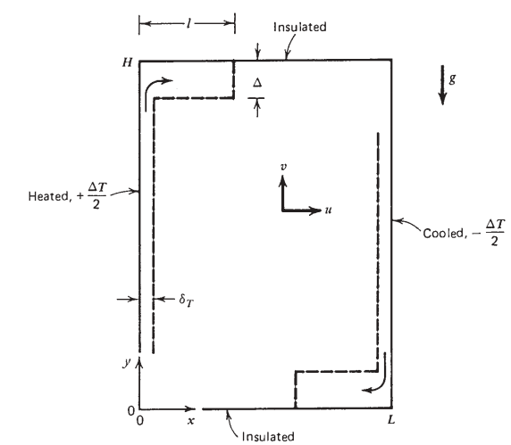

Análise de Escala - Dedução da Correlação de Berkovsky-Polevikov
A presente observação parte de uma análise de escala do problema convecção natural em cavidade preenchida com fluido newtoniano e sem blocos interno, seguindo em direção à dedução da correlação de Berkovsky-Polevikov para Nusselt médio, a qual é comumente utilizada para caracterização da transferência de calor em cavidades preenchidas com blocos condutores internos.
Geometria do Problema: Considera-se uma cavidade bidimensional de altura \(H\), comprimento \(L\), preenchida com um fluido newtoniano.

Neste problema estamos interessado no comportamento transiente do fluido pela troca de calor através das paredes da cavidade, com as temperaturas de \(+\Delta T/2\) e \(-\Delta T/2\) nas paredes resfriada e aquecida, respectivamente. As paredes superior e inferior \((y=0,H)\) permanecem isoladas através do tempo. As condições iniciais são de temperatura nula para o fluido \((T=0)\) e campo de velocidades nulo \((u=v=0)\).
Equações de balanço
As equações governantes de balanço de massa, quantidade de movimento,e energia em cada ponto da cavidade são descritas por:
\(\displaystyle\frac{\partial u}{\partial x}+\frac{\partial v}{\partial y}=0\)
\(\displaystyle\frac{\partial u}{\partial t}+u \frac{\partial u}{\partial x}+v \frac{\partial u}{\partial y}=-\frac{1}{\rho} \frac{\partial P}{\partial x}+\nu\left(\frac{\partial^{2} u}{\partial x^{2}}+\frac{\partial^{2} u}{\partial y^{2}}\right)\)
\(\displaystyle\frac{\partial v}{\partial t}+u \frac{\partial v}{\partial x}+v \frac{\partial v}{\partial y}=-\frac{1}{\rho} \frac{\partial P}{\partial y}+\nu\left(\frac{\partial^{2} v}{\partial x^{2}}+\frac{\partial^{2} v}{\partial y^{2}}\right)-g\left[1-\beta\left(T-T_{0}\right)\right]\)
\(\displaystyle\frac{\partial T}{\partial t}+u \frac{\partial T}{\partial x}+v \frac{\partial T}{\partial y}=\alpha\left(\frac{\partial^{2} T}{\partial x^{2}}+\frac{\partial^{2} T}{\partial y^{2}}\right)\)
Destaca-se nas equações de balanço de quantidade de movimento a modelagem do fluido como Boussinesq-incompressível, i.e., \(\rho\) constante em toda equação exceto no termo de força da quantidade de movimento em \(y\), o qual é representado por \(\rho[1-\beta (T-T_{0})]\).
Análise de Escala
Ao invés de resolver numericamente as equações diferenciais parciais descritas acima, dedica-se na presente seção às análises das escalas dos termos para prever teoricamente os tipos de escoamento e padrões de tranferência de calor que se desenvolvem na cavidade. Imediatamente após \(t=0\), dado que o fluido próximo a cada parede encontra-se parado, a equação do balanço de energia pode ser expressada em escalas de balanço entre a inércia térmica e condutividade normal a parede,
\(\displaystyle\frac{\Delta T}{t} \sim \alpha \frac{\Delta T}{\delta_{T}^{2}}.\)
Esta proporcionalidade de escalas segue do reconhecimento de \(\Delta T\), \(t\) e \(\delta_{t}\) como escalas de \(T\), \(t\) e \(x\) no balanço de energia. Na mesma equação, considera-se \(u=v=0\) e \(\partial^{2} T/\partial y^{2} << \partial^{2} T/\partial x^{2}\) devido à espessura da camada térmica \(\delta_{t}\) ser muito menor que a altura da cavidade em \(t=0^{+}\) (destaca-se para \(y\sim H\) e \(x \sim \delta_{t}\)). A equação acima dita que inicialmente (\(t=0^{+}\)) as paredes resfriadas e aquecidas são revestidas por uma cada condutiva de expessura que aumenta na ordem
\(\delta_{T} \sim(\alpha t)^{1 / 2}.\)
A escala da velocidade é dominada pelo efeito de empuxo na cavidade próximo aos pontos de maior gradiente de temperatura (paredes verticais resfriada e aquecida). Eliminando o termo de pressão (\(P\)) pela junção das equações de quantidade de movimento em \(x\) e \(y\), tem-se a relação
\(\displaystyle\frac{\partial}{\partial x}\left(\frac{\partial v}{\partial t}+u \frac{\partial v}{\partial x}+v \frac{\partial v}{\partial y}\right)-\frac{\partial}{\partial y}\left(\frac{\partial u}{\partial t}+u \frac{\partial u}{\partial x}+v \frac{\partial u}{\partial y}\right)= v\left[\frac{\partial}{\partial x}\left(\frac{\partial^{2} v}{\partial x^{2}}+\frac{\partial^{2} v}{\partial y^{2}}\right)-\frac{\partial}{\partial y}\left(\frac{\partial^{2} u}{\partial x^{2}}+\frac{\partial^{2} u}{\partial y^{2}}\right)\right]+g \beta \frac{\partial T}{\partial x}\)
representada em função apenas dos termos de velocidade e Boussinesq.
A equação acima pode ser dividida em três partes: no lado esquerdo da equação tem-se os termos de inércia e no lado direito os termos viscosos e de empuxo. Destacando os termos que predominam em escala de cada uma das partes, têm-se
\(\underbrace{\displaystyle\frac{\partial^{2} v}{\partial x \partial t}}_{Inércia}, \quad \quad \underbrace{\nu\displaystyle\frac{\partial^{3} v}{\partial x^{3}}}_{Viscoso}, \quad \quad \underbrace{g \beta \displaystyle\frac{\partial T}{\partial x}}_{Empuxo} \quad\quad \underbrace{\longrightarrow}_{\textrm{dado a escala de cada termo}} \quad\quad \underbrace{\displaystyle\frac{v}{\delta_{T} t}}_{Inércia}, \quad\quad \underbrace{\nu \displaystyle\frac{v}{\delta_{T}^{3}}}_{Viscoso} \quad \sim \quad \underbrace{\displaystyle\frac{g \beta \Delta T}{\delta_{T}}}_{Empuxo}.\)
A força que promove o escoamento é dada pelo efeito de empuxo \((g\beta\Delta T)/\delta_{T}\), a qual deve se balancear em relação as forças de inércia e viscosas durante o escoamento. Dividindo a equação acima pela viscosidade e substituindo a escala de \(\delta_{T}^{2}\sim \alpha t\), tem-se de acordo com Bejan (2013)
\(\underbrace{\displaystyle\frac{1}{Pr}}_{Inércia}, \quad \quad \underbrace{1}_{Viscoso}, \quad \sim \quad \underbrace{ \displaystyle\frac{g\beta\Delta T\delta_{T}^{2}}{\nu v} }_{Empuxo}.\)
Bejan (2013) opta por sempre em um somatório escolher o termo de escala dominante, sendo que está escolha elimina casos onde ambos termos no somatório possuem escalas relevantes ao problema. Determinando a escala do termo de velocidade vertical como proposto por Bejan (2013) têm-se:
Com a predominância do termo de inércia em fluidos com \(Pr<<1 \quad\longrightarrow\quad v \quad \sim \quad \displaystyle\frac{g\beta\Delta T\delta_{T}^{2}}{\nu }\)
Com a predominância do termo viscoso em fluidos com \(Pr=1 \textrm{ ou } Pr>>1 \quad\longrightarrow\quad v \quad \sim \quad \displaystyle\frac{g\beta\Delta T\delta_{T}^{2}Pr}{\nu }\)
Contudo, na presente análise propõe-se manter o somatório de ambas escalas, assim permitindo a utilização tanto dos termos de força viscosa e de inércia para determinação da escala \(v\), i.e.,
\(\underbrace{\displaystyle\frac{C_{0}}{Pr}}_{Inertia} \quad + \quad \underbrace{C_{1}}_{Friction} \quad \sim \quad \underbrace{ \displaystyle\frac{g\beta\Delta T\delta_{T}^{2}}{\nu v} }_{Buoyancy} \quad\quad \longrightarrow \quad\quad v \quad \sim \quad \displaystyle\frac{C_{1}g\beta\Delta T\delta_{T}^{2}}{\nu }\displaystyle\left(\frac{Pr}{C_{0}+Pr}\right)\)
onde \(C_{0}\) e \(C_{1}\) são constantes de ajuste dos termos.
Como próximo passa na análise de escala, a atenção torna-se de volta para a equação de balanço da energia. O calor conduzido das paredes para o fluido pela camada térmica \(\delta_{T}\) não é unicamente gasto através do espaçamento da camada, dado que parte desta entrada de calor é transportada pela camada \(\delta_{T}\) com velocidade \(v\) resultante do empuxo. Consequentimente, a equação da energia resulta na competição entre três efeitos distintos:
\(\underbrace{\displaystyle\frac{\Delta T}{t}}_{Inércia}, \quad \quad \underbrace{v\displaystyle\frac{\Delta T}{H}}_{Convecção}, \quad \quad \underbrace{\alpha\displaystyle\frac{\Delta T}{\delta_{T}^{2}}}_{Condução}.\)
Com o aumento de \(t\), o efeito de convecção aumenta enquanto o efeito de inércia diminui em relevância. Considerando o tempo \(t_{f}\) como o momento em que o balanço de energia expressa um equilíbrio entre a condução de calor da parede e a entalpia carregada verticalmente pelo empuxo, tem-se
\(v\displaystyle\frac{\Delta T}{H}\sim \alpha\frac{\Delta T}{\delta_{T}^{2}} \quad \rightarrow \quad t_{f}\sim \left(C_{1} \frac{\nu H}{g\beta \Delta T \alpha} \left(\frac{C_{0}+Pr}{Pr} \right) \right)^{1/2}.\)
Neste tempo, a espessura da camada pode ser aproximada para
\(\delta_{T,f} \sim (\alpha t_{f})^{1/2} \sim C_{1}H\left(Ra_{H}\left( \displaystyle\frac{Pr}{C_{0}+Pr}\right) \right)^{-1/4}\)
onde \(Ra_{H}\) é o número de Rayleigh baseado na altura da cavidade
\(Ra_{H}=\displaystyle\frac{g\beta \Delta T H^{3}}{\alpha\nu}.\)
Considerando \(\overline{Nu}=\displaystyle\frac{q^{'}}{q^{'}_{\textrm{condução pura}}}\) o número de Nusselt médio no tempo em que cavidade atinge o regime permanente (i.e., \(t_{f}\)), tem-se a fluxo de calor conduzida puramente por condução e o fluxo de calor total dados por
\(q^{'}_{\textrm{condução pura}}=\displaystyle\frac{kH\Delta T}{L} \quad \longrightarrow \quad q^{'}= (\rho v \delta_{T})_{f}c_{P}\Delta T = \displaystyle\frac{k}{\delta_{T,f}} H\Delta T = k\Delta T C_{1}\left(Ra_{H}\left( \displaystyle\frac{Pr}{C_{0}+Pr}\right) \right)^{1/4},\)
substituindo as equações do fluxo de calor obtém-se na forma final a correlação do número de Nusselt médio que estima a capacidade de transferência de calor através da cavidade:
\(\overline{Nu}=C_{1}\displaystyle\frac{L}{H}\left(Ra_{H}\left( \displaystyle\frac{Pr}{C_{0}+Pr}\right) \right)^{1/4}.\)
Correlação de Berkovsky-Polevikov
A correlação de Berkovsky-Polevikov (http://elib.bsu.by/handle/123456789/10278) é uma correlação comumente utilizada na determinação do número de Nusselt médio para problemas de convecção natural com blocos condutivos internos. Apesar de ter sido obtida por ajuste de curva de resultados de simulação numérica, a correlação
\(\overline{Nu}_{BP}=0,22\left(Ra_{H}\left( \displaystyle\frac{Pr}{0,2+Pr}\right) \right)^{0,28}\left(\displaystyle\frac{L}{H}\right)^{0,09} \quad, \quad 1 \leq\displaystyle\frac{L}{H}\leq 2,\)
pode ser justificada com base na análise de escala desenvolvida e com a consideração de uma cavidade quadrada (i.e., \(H=L\)). Dado as constantes de ajuste \(C_{0}=0,2\) e \(C_{1}=0,22\), tem-se como uníca diferença os expoentes das equações, sendo 0,25 e 0,28 na presente análise de escala e na correlação Berkovsky-Polevikov.
Correlação para cavidade quadrada:
\(\textrm{Análise de escala}: \quad \quad \overline{Nu}=0,22\displaystyle\left(Ra_{H}\left( \displaystyle\frac{Pr}{0,2+Pr}\right) \right)^{0,25}.\)
\(\textrm{Correlação de Berkovsky-Polevikov}: \quad \quad \overline{Nu}_{BP}=0,22\left(Ra_{H}\left( \displaystyle\frac{Pr}{0,2+Pr}\right) \right)^{0,28}\)
[ ]: